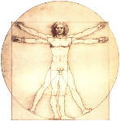
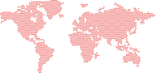
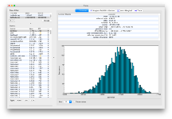

Statistics is a field of study that involves the collection, analysis, and interpretation of data. It has become an essential tool in numerous fields, including science, business, medicine, and politics. The origin of statistics can be traced back to ancient times when people used crude methods to gather and analyze data.
One of the earliest recorded uses of statistical methods can be found in the Bible. In the book of Numbers, Moses ordered a census of the Israelites, which involved counting and recording the number of people in each tribe. This was one of the first attempts to collect and analyze data on a large scale, and it was done for administrative and military purposes.
In ancient Greece, the philosopher Plato used statistical methods to analyze data on economic issues, such as taxation and trade. He also used statistics to study the patterns of human behavior, such as crime and punishment. Plato believed that statistics could help people make better decisions by providing them with objective information about the world.


During the Renaissance, scholars such as Galileo and Leonardo da Vinci used statistics to study the natural world. Galileo, for example, conducted experiments to study the motion of falling objects and used statistical methods to analyze the results. Leonardo da Vinci used statistics to study the human body, including its proportions and movements.
The development of probability theory in the 17th and 18th centuries paved the way for modern statistics. The French mathematician Blaise Pascal and the Dutch mathematician Christiaan Huygens developed methods for calculating the odds of different outcomes in games of chance. The Swiss mathematician Jacob Bernoulli developed the first law of large numbers, which states that as the number of trials in a random experiment increases, the average of the outcomes approaches a fixed value.


In the 19th century, statistics became more widely used in social and economic research. The British economist William Petty used statistics to study the economy, and the French economist Adolphe Quetelet used statistics to study human populations. Quetelet was the first to apply statistical methods to the study of human behavior, and his work laid the foundation for modern social statistics.
The 20th century saw the development of new statistical methods and techniques, including regression analysis, hypothesis testing, and Bayesian statistics. These methods have been used in a wide range of fields, including medicine, psychology, and engineering.
